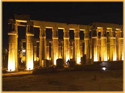

|
 |
|
The most famous Egyptian pyramids are those found at Giza, on the outskirts of Cairo. Several of the Giza pyramids are counted among the largest structures ever built. The Pyramid of Khufu at Giza is the largest Egyptian pyramid. It is the only one of the Seven Wonders of the Ancient World still in existence. |
||
|---|---|---|
| Not only are the two temples at Abu Simbel among the most magnificent monuments in the world, but their removal and reconstruction was an historic event in itself. When the temples (280 km from Aswan) were threatened by submersion in Lake Nasser. |
||
 |
The Museum of Egyptian Antiquities, known commonly as the Egyptian Museum or Museum of Cairo, in Cairo, Egypt, is home to an extensive collection of ancient Egyptian antiquities. It has 120,000 items, with a representative amount on display, the remainder in storerooms. |
|
|  | The Karnak Temple Complex, commonly known as Karnak, comprises a vast mix of decayed temples, chapels, pylons, and other buildings. Building at the complex began during the reign of Senusret I in the Middle Kingdom and continued into the Ptolemaic period, |
|
| Where the city of Akhetaten once stood, we can still see the remains of the two temples dedicated to Aten (the sun god) whom the pharaoh Akenaten designated as the one true god of Egypt, |
||
 |
Known to the Ancient Egyptians as Abu or Yebu, the island of Elephantine stood at the border between Egypt and Nubia. It was an excellent defensive site for a city and its location made it a natural cargo transfer point for river trade. | |
| Hatshepsut's chancellor, royal architect Senenmut oversaw construction. Although the adjacent, earlier mortuary temple of Mentuhotep was used as a model, the two structures are nevertheless significantly different in many ways. Hatshepsut's temple employs a lengthy, colonnaded terrace that deviates from the centralised structure of Mentuhotep's model |
||

Program 1 :
You will visit:
the Egyption museum,
the pyramids directly...
then you will see the sound and light show.
the cost of this program =1000 >>>800$.
Program 2 :
You will visit:
El-Karnak Temple in Luxor ,
then Spicial visit to the vally of Kings
and you will visit Hatshepsut's chancellor
the cost of this program for 4 days=2000 >>>1800$.
Program 3 :